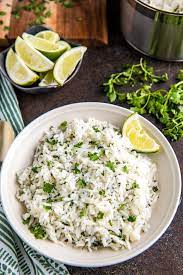

Odin Recipes

Buttered Cilantro Lime Rice
Having a hard time to decide on what side to pair with your meat?
Rice. But that's too easy, so let's zest it up a little...
Ingredients
- White rice
- Salt
- Black pepper
- Lime
- Cilantro
- Butter
Steps
-
Thouroughly rinse the rice
-
Place rice in rice cooker with enough water to reach the first knuckle on your pointer finger
- Follow the steps on your rice cooker
-
When done add butter to the rice cooker and close lid to melt
- Zest Lime then add it to the rice
- Add cilantro to rice
- Squeeze lime juice into rice, to taste
- Add salt and pepper to taste
- Serve